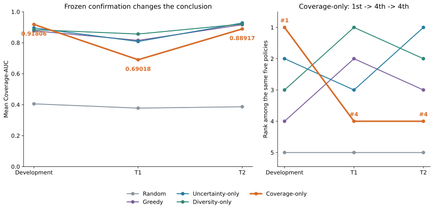
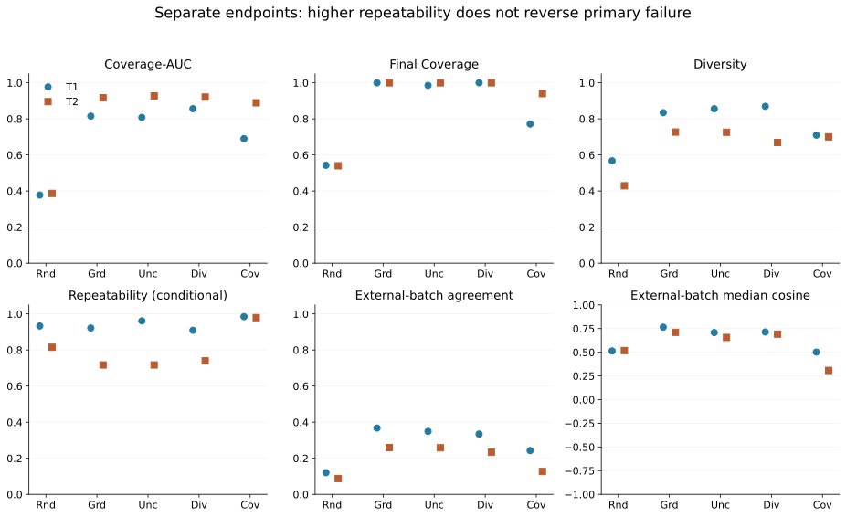
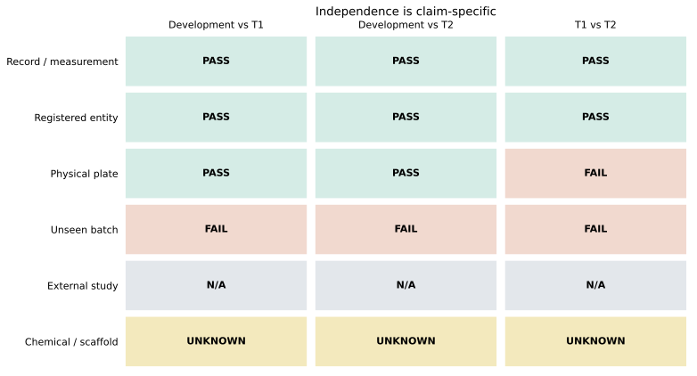

Recorded replay
1. A limited budget, not a free oracle
The pool contains 300 previously screened conditions from 50 registered compounds in each fixed campaign. Which conditions should receive another measurement?
Same initial set per seed across policies. At most two doses per compound. Historical and hidden evaluation measurements are separate costs. No new experiment is run here.
2. Recorded decision view
| Round | Selected condition |
|---|
Sealed original receipt
Future actions are hidden until the replay reaches their round. The original runner completed all trajectories before accessing H scores.
3. Post-seal evaluation view
Hidden evaluation is not online feedback. Finish the 12-round replay to open the saved evaluation view.
Retrospective H evaluation · not policy input
This is one illustrative seed. Use the 20-seed summaries below for conclusions.
Primary result
4. The development winner did not keep its rank
Coverage-only: 0.91806 → 0.69018 → 0.88917; rank 1 → 4 → 4.
| Policy | Mean Coverage-AUC | Rank / 5 |
|---|

Development-to-confirmation ranking reversal. T1 and T2 are fixed campaigns within one study, not independent biological replications.
Coverage-only confirmation: C — NOT CONFIRMED. This rejects its development superiority claim, not the value of the evaluation framework or all coverage-based policies.
5. Differences and trade-offs stay visible
| Campaign / comparator | Paired mean difference | 95% bootstrap interval |
|---|
Coverage-only minus comparator. 20 paired seeds per campaign; 10,000 resamples; RNG 1600. Conditional on fixed entities and plates. The T2–Diversity interval includes zero.
Higher repeatability does not reverse primary failure

Coverage-only has higher conditional Repeatability, but lower final coverage and weaker external-batch consistency than strong baselines. No composite score replaces Coverage-AUC.
6. What is actually independent?

Allowed scope: one study, a previously seen batch environment, registered entities and physical plates not used in development. T1 and T2 share eight physical plates.
No evidence of unseen-batch, chemical/scaffold, or external-study generalization; no wet-lab, drug-efficacy, or clinical benefit established. T1/T2 are now performance-exposed.